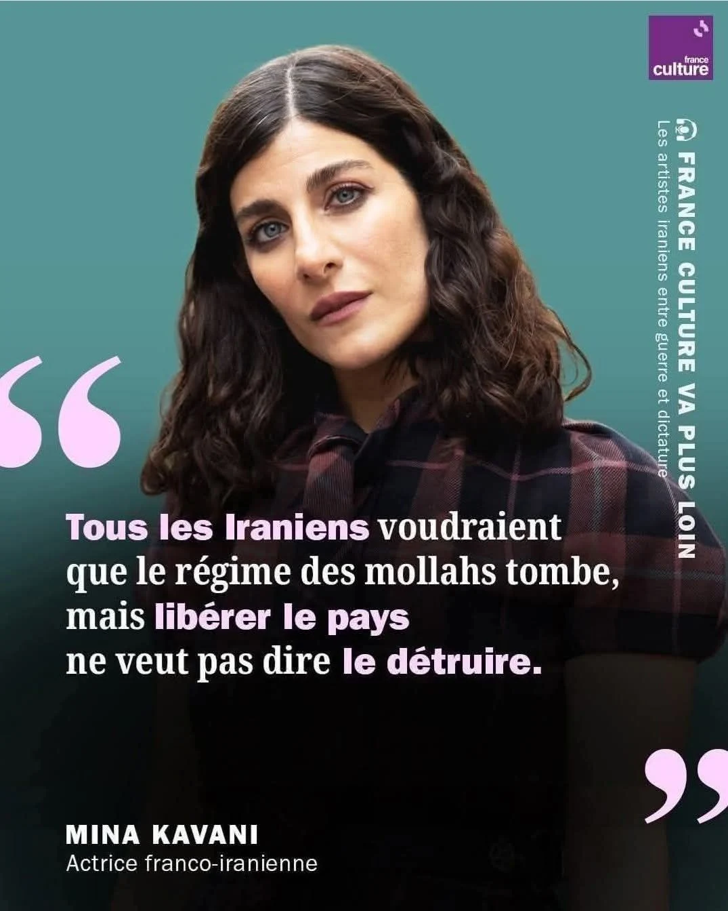

Document relayé
Iran. La parole de Mina Kavani sur France Culture
Date indiquée par Facebook · 9 mars 2026
Repères éditoriaux
Nous avons relayé un visuel de France Culture donnant la parole à l’actrice franco-iranienne Mina Kavani. Elle y exprime son opposition au régime des mollahs et rappelle que libérer le pays « ne veut pas dire le détruire ».

Sources
Archive rouge · document diffusé sur Facebook · AR-0002-FB-00844
À lire aussi · Journée internationale de la paix. Le texte national dans le relevé